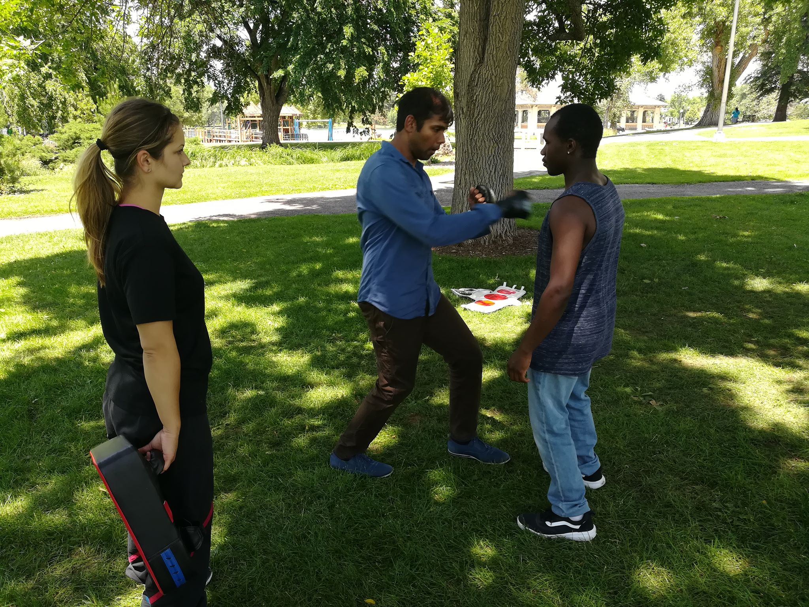
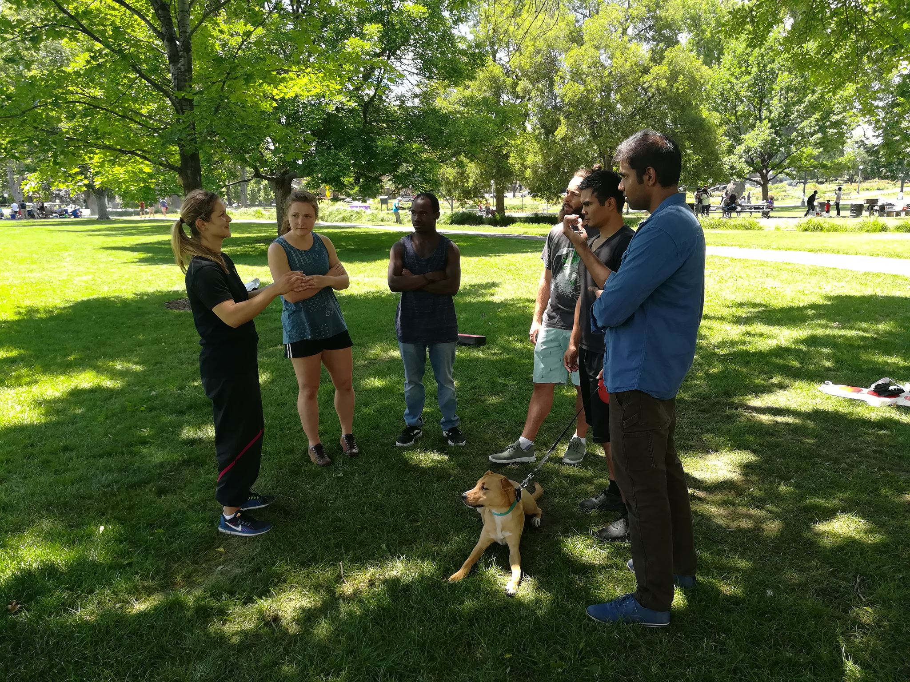
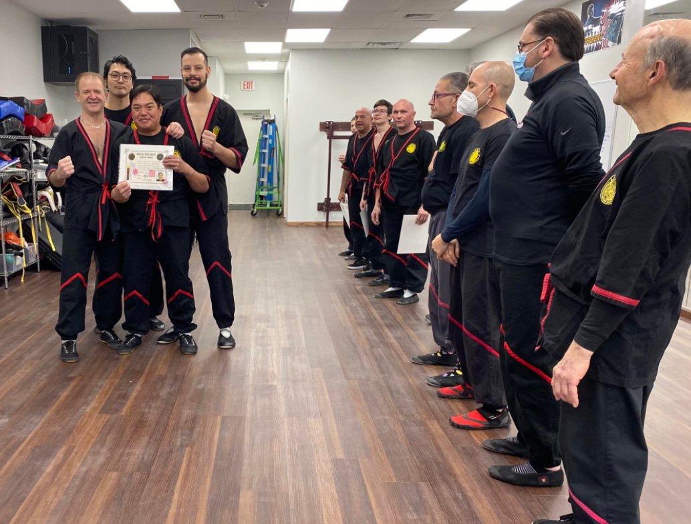
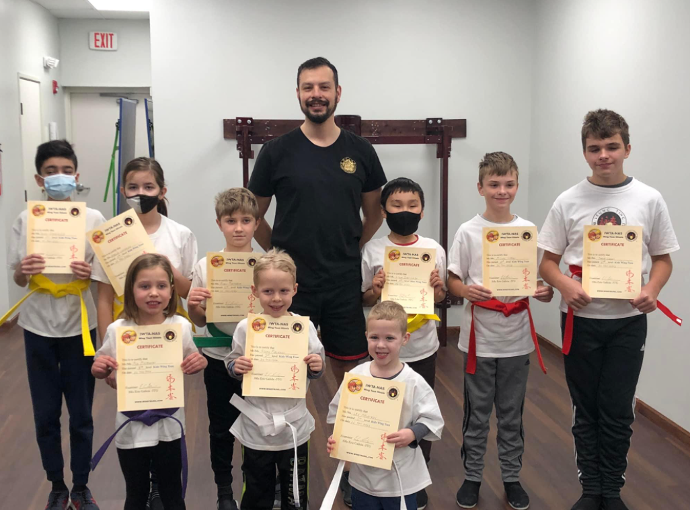

Seminars
We have seminars allowing students to further explore different techniques. In addition to that, they are able to meet other members of the wing tsun community. There are different types of semindars including the Leung Ting semindar, where our wing tsun family from Hong Kong comes to improve our school.
 Awards
Our training program is sub-divided into twelve student grades and twelve instructor levels. We test our students every 3 months and students are being awarded with a higher level batch and a certificate for completion. Kids are also awarded certificates and they also receive belts at the completing of each level.
 